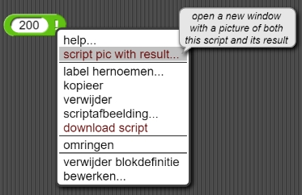

Het Representeren van Hele Getallen
Op deze pagina, , ga je leren hoe computers gehele getallen opslaan.
Zoals je wel weet, komen getallen overal voor in computer algoritmen - zelfs als getallen niet het onderwerp zijn. Bijvoorbeeld, de gebruiker kan geïnteresseerd zijn in een plaatje, maar dat plaatje is een abstractie van getallen. Getallen worden ook gebruikt om een specifiek item in een lijst te vinden. De komende pagina's, zal je dieper ingaan op getallen in de computer.
-
Als je naar de code kijkt zul je zien dat het een recursief resultaatblok is. Hoe werkt het? Je hebt recursie voor het eerste gezien in Hoofdstuk 2 Les 4: Fractale Kunst .De faculteit van een positief geheel getal n (geschreven als "n!") is het product van alle gehele getallen van 1 tot en met n. Bijvoorbeeld:
5! = 1 \times 2 \times 3 \times 4 \times 5 = 120
 Probeer deze invoeren uit:
Probeer deze invoeren uit:
Je krijgt wellicht andere resultaten afhankelijk van je de processor van je computer.


De "e+" betekent "tien keer de macht van" dus deze notatie betekent 2.6525285981219103 × 1032 = 265,252,859,812,191,030,000,000,000,000,000.
Computer hardware met een Vaste Breedte
breedte: Het aantal bits dat een CPU kan verwerken tegelijkertijd
woord: een binaire reeks van een bepaald aantal bits
Dus waarom toonde Snap! 20! in natuurlijke gehele getallen representatie maar 30! in wetenschappelijke notatie? Elk computer model is ontworpen met een bepaalde breedte, het aantal bits dat de processor tegelijk van het geheugen leest of in het geheugen schrijft. Dat aantal bits wordt een woord genoemd. Sinds 2016 hebben de meeste nieuwe computers een breedte van 64 bits. De eerste microcomputer, verkocht in 1971, was 4 bits breed!
Een 64-bit woord representeert 264 verschillende waardes. We gebruiken half voor negatieve getallen, een voor nul, en de rest voor positieve getallen. De helft van 264 ( dat is 263 = 9,223,372,036,854,775,808) is ongeveer 9 × 1018. Dat betekent dat de 19 cijfers van 20! maar net passen in een 64-bit woord. Maar de 33 cijfers van 30! niet. Daarom geeft de computer aan dat er een overflow error is, en berekent Snap! een benadering.
- Experimenteer in Snap!. Wat is het eerste hele getal waarvan de faculteit niet in een woord past?
Bignums
Waarom kunnen programmeertalen niet gewoon meer dan een woord gebruiken om een heel getal te representeren? Dat kunnen ze. Het is gewoon zo dat een enkele machine taal instructie alleen een-woord getallen kan toevoegen. Een programmeertaal moet een beetje harder werken om toevoegingen te maken met meerdere-woord waardes. Niet alle talen doen dit, maar de hoogste-level talen doen het.
- Een geweldig voorbeeld van een high-level programmeertaal is Scheme. Je kunt het leren met het gratis online book Structure and Interpretation of Computer Programs .
- Klik op dit blok in het script-gebied:
- Probeer nu weer
30!.
 Deze (precieze) waarde is anders dan het (afgeronde) zwevendekommagetal hierboven. (Meer over zwevendekommagetal later.)
Deze (precieze) waarde is anders dan het (afgeronde) zwevendekommagetal hierboven. (Meer over zwevendekommagetal later.) - Probeer
200!. Het gerapporteerde resultaat past niet op je scherm, maar je kan op het deze manier zien: - Hou de Controltoets ingedrukt; terwijl je dit doet hou je de Shifttoets ingedrukt (het moet
in die volgorde) en daarna klik je op het
 blok.
blok.
- Klik in het menu dat nu verschijnt op het rode stuk tekst "script pic with result...". (Als een ander menu verschijnt klik dan een keer buiten dat menu.)
- Een afbeelding wordt dan gedownload op je computer. Je kan op deze afbeelding inzoomen om de getallen te lezen.
- Hou de Controltoets ingedrukt; terwijl je dit doet hou je de Shifttoets ingedrukt (het moet
in die volgorde) en daarna klik je op het
- Hoeveel getallen zitten er in
200!(Tel dit niet met de hand; je hebt een computer).